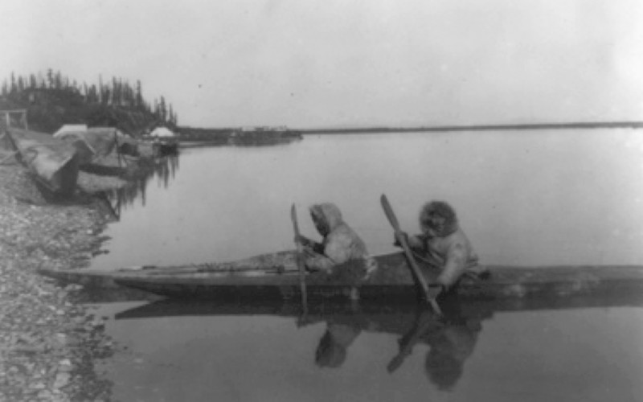

Un famoso arqueólogo británico, Sir Leonard Wooley, descubrió una canoa y un remo de plata en las tumbas de un rey Sumerio, que data de esa misma antigüedad. Algo similar sucedía con la cultura taína, donde sus habitantes las elaboraban con pieles de animales y troncos de árboles. Incluso los egipcios dejaron pistas de su construcción en las pinturas antiguas. Ataban los juncos hasta alcanzar la forma deseada para desplazarse por los ríos. De cualquier manera, la idea de montar sobre “una embarcación sin cubierta”, como definió en su día Garcilaso de la Vega, es muy antigua. Tanto como la necesidad del hombre de desplazarse sobre el agua.
En cuanto a su evolución, hay que resaltar que Cristóbal Colón, a su llegada a América, europeizó el término “piragua” en lugar de “canoa”. Por aquel entonces, estaban hechas de una sola pieza compuestas por un gran tronco de árbol, afilado en las puntas y vaciado por dentro. No es hasta la década de 1840 cuando se empezó a considerar deporte, aunque el hecho más significativo se produjo en 1865 gracias a John MacGregor. Este abogado inglés construyó el kayak Rob Roy con el que navegó por los ríos de gran parte de Europa y África ayudado con un remo de doble pala. Dados los increíbles avances como el de William Fronde (a más largura del kayak, más velocidad), se formalizó como deporte olímpico en los JJOO de Berlín en 1936. En España no fue hasta 1959 cuando se creó la Federación Española de Piragüismo, solicitado por varios clubes para reclamar su importancia como deporte. A día de hoy, gracias al avance de la tecnología y la construcción de mejores materiales, permite que se pueda practicar en distintas modalidades.
 registrate
registrate